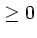

The general form of a plt command is:
plt recognizes its command-line arguments by looking at the first character of each argument. If an argument begins with ``:'', it's a data-spec. If it begins with a digit (0-9), it's a column-number; if it's either ``#'' or ``%'', it's shorthand for ``all of the available column-numbers, in order.'' If it begins with a hyphen (-), it's an option. If it begins with ``('' (left parenthesis) or ``['' (left square bracket), it's a fontgroup specification (not discussed further in this section; see chapter 11). If the argument begins with none of these special characters, it may be the name of a data-file.
A data-spec is a string that describes the format of the data-file. Most plots do not require a data-spec (described in section 3.4), and you may omit this argument in such cases. If you provide a data-spec, it must precede the data-file name in the command line.
The data-file contains the data you wish to plot, normally in text format as columns of decimal numbers (other formats are described in chapter 3). File example1.data illustrates the usual format:
0 0 0 1 1 2 2 3 1 3 5 3 4 7 2
This file contains three columns (from left to right: column numbers 0, 1, and 2) and five rows (from the top: row numbers 1, 2, 3, 4, and 5). The data-file's name, including the suffix if any, is completely arbitrary; if the name of your data-file begins with one of the special characters listed above, simply prefix it with ``./'' (since ``.'' is always synonymous with the current directory, ``./anything'' is an alternate name for ``anything''). If you omit the name of the data-file, plt reads data from its standard input. This feature allows you to pipe data from another program into plt without writing them to a file first.
You must specify at least one column-number (an integer ) in order to plot data. The column numbers must always follow the name of the data file in the argument list (unless your data are supplied via the standard input). If you specify only one column number, plt assumes that the values it reads from that column are the y values, and it either reads the x values from column 0 (if the data file contains more than one column), or it generates a set of successive integers, beginning with 0, to use as the x values by default.
There are many options described in the following chapters. Many of them accept or require additional arguments. In most cases, plt can determine a reasonable default value for these arguments. If you supply a ``-'' (hyphen) on the command line in place of such an argument, plt will choose a default. In this book, options normally follow the data-file and column-number arguments on plt's command line. This ordering is not necessary in most cases, but this convention makes it easier for humans to parse the command line.